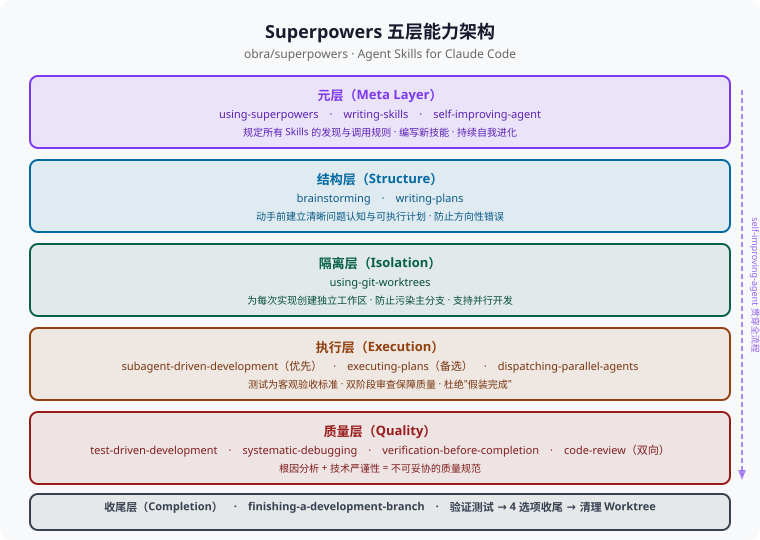

Skills 圣经：Superpowers 工程实践指南
🎯 "工具给了 Agent 行动能力，Skills 给了 Agent 工程纪律。Superpowers 做的事，是把软件开发中最难坚持的那些最佳实践，变成 AI 不可绕过的执行规范。"
1. 什么是 Superpowers
项目定位
obra/superpowers 是一套专为 Claude Code 设计的 Agent Skills 集合，在 GitHub 上积累了 70k+ Stars。它的目标不是给 AI 添加新功能，而是给 AI 的行为模式加上工程纪律——覆盖软件开发完整生命周期，从需求探索到分支收尾。
核心设计理念：SKILL.md 按需加载
Superpowers 的每一个 Skill 本质上是一个 SKILL.md 文件。这个文件不是普通的 README，而是包含以下内容的结构化专家知识文档：
- 精确的操作流程（Checklist）
- 不可违反的强制约束（MUST / NEVER / FORBIDDEN）
- 常见反模式与 Red Flags
- 与其他 Skills 的协同关系
当 Claude Code 判定当前任务需要某项能力时，按需加载对应 Skill 的上下文。这个设计解决了一个核心矛盾：
❌ 传统做法：把所有规范塞进主 System Prompt
→ 上下文过长 → 模型退化 → AI 忘记遵守规范
✅ Superpowers 做法：SKILL.md 按需注入
→ 每次只加载当前需要的 Skill → 上下文聚焦 → 规范有效执行
安装
npx skills add obra/superpowers -g -y
完整 Skills 一览
| Skill 名称 | 阶段 | 核心作用 |
|---|---|---|
brainstorming | 需求探索 | 结构化思考，生成设计规格文档 |
writing-plans | 设计规划 | 输出可执行的 plan.md |
test-driven-development | 开发实现 | 红绿重构循环，TDD 约束 |
using-git-worktrees | 实现前置 | 创建隔离工作区 |
executing-plans | 开发实现 | 串行执行计划（无子代理环境） |
subagent-driven-development | 开发实现 | 子代理驱动执行，双阶段审查 |
dispatching-parallel-agents | 调试/开发 | 独立问题域并发调查 |
systematic-debugging | 调试 | 根因调查四阶段法 |
verification-before-completion | 收尾 | 强制运行验证命令 |
finishing-a-development-branch | 收尾 | 标准化分支合并/PR/丢弃流程 |
requesting-code-review | 审查 | 发起高质量代码审查 |
receiving-code-review | 审查 | 正确处理审查意见 |
writing-skills | 元技能 | 编写新的 SKILL.md |
self-improving-agent | 元技能 | 从经验中持续自我进化 |
2. 元规则：using-superpowers
在所有 Skills 中，using-superpowers 扮演元技能角色——它规定了 AI Agent 如何发现和使用所有其他 Skills。可以把它理解为 Superpowers 整个系统的"操作系统"。
指令优先级
用户指令（CLAUDE.md、直接请求）
↓ 高于
Superpowers Skills
↓ 高于
默认系统提示
这个优先级设计保证了用户始终保有最终控制权。如果你在 CLAUDE.md 里写"本项目不使用 TDD"，那么即使 test-driven-development Skill 说"必须用 TDD"，AI 也会遵循你的指令。
核心原则：1% 概率必须调用
如果你认为某个 Skill 有哪怕 1% 的概率适用于当前任务，你就必须调用它。这不可商量，不可选择，没有理由可以绕过。
这条规则听起来严苛，但它的设计动机很清晰：AI 总是倾向于走捷径、跳过步骤。1% 阈值通过极低的触发门槛，防止 AI 用"这个 Skill 不大可能有用"作为理由来规避纪律。
Skill 调用流程
收到用户消息
↓
即将进入 EnterPlanMode？
└─ 是否已 Brainstorm？
├─ 没有 → 先调用 brainstorming skill
└─ 有 → 继续
有没有可能适用的 Skill（哪怕 1%）？
├─ 有 → 调用 Skill 工具
│ ↓
│ 宣告："使用 [skill] 来 [目的]"
│ ↓
│ Skill 有检查清单？
│ ├─ 有 → 为每条创建 TodoWrite 待办项
│ └─ 没有 → 严格按 Skill 执行
│
└─ 绝对没有 → 直接回应
Red Flags：你在找借口
当 AI 产生以下想法时，这是在用自欺欺人的理由规避纪律：
| AI 的想法 | 真相 |
|---|---|
| "这只是个简单问题" | 简单问题也是任务，先检查 Skill |
| "我需要更多背景" | Skill 检查先于澄清性提问 |
| "先探索一下代码库" | Skills 告诉你如何探索，先检查 |
| "我记得这个 Skill 的内容" | Skills 会进化，必须读当前版本 |
| "这感觉很有效率" | 无纪律的行动浪费时间，Skills 防止这点 |
Skill 类型
- 刚性（Rigid）：如 TDD、Debugging——无论上下文怎样，都必须严格遵循，不得因"情况特殊"而调整执行纪律
- 灵活（Flexible）：如设计模式——将 Skill 的原则适配到具体情境，允许一定范围内的调整
3. 完整工作流
Superpowers 的核心价值之一是提供了一条端到端的软件开发流水线。每个 Skill 在流水线中扮演特定角色，Skills 之间的衔接关系是经过精心设计的：
Brainstorm → Write Plans → Setup Worktree
→ Subagent-Driven Dev（或 Execute Plans）
→ Debug（如需） → Verify → Code Review
→ Finish Branch
| 阶段 | Skill | 输出物 | 防止的问题 |
|---|---|---|---|
| 探索 | brainstorming | 设计规格文档 | 未经分析就开始写代码 |
| 规划 | writing-plans | plan.md | 计划不可执行、缺少测试约束 |
| 隔离 | using-git-worktrees | 独立工作区 | 主分支污染、无法并行开发 |
| 实现 | subagent-driven-development | 经双阶段审查的提交 | 质量失控、假装完成 |
| 实现（备选） | executing-plans | 经验证的提交 | 无子代理时的替代方案 |
| 调试 | systematic-debugging | 根因修复 | Symptom Fix（治标不治本） |
| 加速调试 | dispatching-parallel-agents | 并发修复结果 | 独立 Bug 串行处理浪费时间 |
| 验证 | verification-before-completion | 真实验证证据 | 假装完成、过度自信 |
| 审查 | requesting/receiving-code-review | 审查报告 | 代码质量盲区 |
| 收尾 | finishing-a-development-branch | 干净的分支状态 | 无序合并、遗留垃圾 |
💡 核心价值：传统 AI 编程最大的问题是 AI 容易"假装完成"、跳过测试、用表面修复掩盖真正问题。Superpowers 将软件工程的纪律内化为 AI 的执行规范，而不是依赖程序员事后检查。
4. 五层能力架构
从更高层次看，Superpowers 的 14 个 Skills 形成了一个五层架构：

┌──────────────────────────────────────────────────┐
│ 元层（Meta Layer） │
│ using-superpowers · writing-skills │
│ · self-improving-agent │
│ 规定调用规则 · 编写新 Skill · 持续自我进化 │
├──────────────────────────────────────────────────┤
│ 结构层（Structure） │
│ brainstorming → writing-plans │
│ 动手前建立清晰问题认知和可执行计划 │
├──────────────────────────────────────────────────┤
│ 隔离层（Isolation） │
│ using-git-worktrees │
│ 为每次实现创建独立工作区，防止污染主分支 │
├──────────────────────────────────────────────────┤
│ 执行层（Execution） │
│ subagent-driven-development（优先） │
│ executing-plans（备选） │
│ dispatching-parallel-agents（并行调查） │
│ 以测试为客观验收标准，双阶段审查保障质量 │
├──────────────────────────────────────────────────┤
│ 质量层（Quality） │
│ TDD · systematic-debugging · verification │
│ · code-review（双向） │
│ 根因分析 + 技术严谨性 = 不可妥协的质量规范 │
├──────────────────────────────────────────────────┤
│ 收尾层（Completion） │
│ finishing-a-development-branch │
│ 验证测试 → 4 选项收尾 → 清理 Worktree │
└──────────────────────────────────────────────────┘
↑ self-improving-agent 贯穿全流程 ↑
5. 核心 Skills 详解
5.1 结构层：Brainstorming + Writing Plans
Brainstorming：硬性门禁
brainstorming Skill 解决的是 AI 编程中最普遍的失误：未经充分分析就开始写代码。
⚠️ HARD-GATE（硬性门禁）：在展示设计方案并获得用户批准之前，绝不调用任何实现 Skill、写任何代码、搭建任何脚手架。这适用于所有项目，无论其表面上看起来多么简单。
完整的 Brainstorming 包含 9 个按序执行的步骤，每步需要建立一个 TodoWrite 任务追踪：
- 探索项目上下文：检查文件、文档、近期提交
- 提供可视化辅助（涉及视觉设计时）：单独发送，不与问题合并
- 逐一提问澄清：一次只问一个问题，了解目的、约束、成功标准
- 提出 2-3 种方案：附权衡分析和推荐理由
- 分节展示设计：每节询问用户确认
- 写设计规格文档：保存至
docs/superpowers/specs/YYYY-MM-DD-<topic>-design.md并 commit - 规格自检：扫描 TBD/TODO、内部矛盾、歧义表述
- 等待用户审阅规格：获得批准才继续
- 转入实现：调用
writing-plansSkill
Brainstorming（发散） Writing Plans（收敛）
↓ ↓
思考过程、方案对比、设计规格 → 可执行的任务清单 + 测试计划
设计原则：一次只问一个问题（多选题优先于开放式）、YAGNI 无情执行（删除不必要功能）。
Writing Plans：plan.md 五要素
writing-plans 将 Brainstorming 输出的设计规格转化为可直接执行的 plan.md：
- Goal：本次实现的最终交付物
- Tasks：原子级子任务，每个有明确的完成标准
- Test Plan：每个子任务对应的测试用例（强制 TDD 约束）
- Dependencies：任务间的前置依赖关系
- ADR（架构决策记录）：关键设计决策及其理由
💡 关键价值：Writing Plans 把 TDD 从"可选纪律"变成"不可绕过的步骤"——任何实现任务都必须先有对应的测试用例。
5.2 隔离层：Using Git Worktrees
Git Worktrees 允许在同一个仓库下同时维护多个独立工作目录，而无需来回切换分支。
何时必须使用：
brainstorming第 4 阶段设计批准后，准备进入实现前subagent-driven-development或executing-plans执行任何任务前
创建流程（5 步）：
# Step 1：确认目录（优先级：.worktrees/ > worktrees/ > 询问用户）
# Step 2：安全验证（目录必须在 .gitignore 中，若未忽略先添加并 commit）
git check-ignore -v .worktrees/
# Step 3：创建 Worktree
git worktree add .worktrees/<feature-name> -b <branch-name>
# Step 4：自动检测并运行项目初始化
# npm install / cargo build / pip install / go mod download
# Step 5：验证干净基线（确认无预存失败）
npm test # 或其他测试命令
关键安全规则：
- 绝不跳过
.gitignore验证（否则会意外提交 Worktree 内容） - 绝不在测试失败时直接开始开发（无法区分新 Bug 和预存问题）
💡 配对关系：
using-git-worktrees（创建隔离工作区）和finishing-a-development-branch（清理工作区）是一对配合使用的 Skills，前者开启，后者收尾。
5.3 执行层：Subagent-Driven Development
subagent-driven-development 是 Superpowers 中最核心的实现策略。它的核心思想是：
为每个任务派遣独立子代理 + 双阶段审查 = 高质量、快速迭代
子代理拥有隔离的上下文——不继承主会话的历史，由协调者为其精确构建最小必要上下文。这既保证了子代理的专注度，也避免了主会话的上下文被消耗殆尽。
完整执行流程：
读取计划，提取所有任务，创建 TodoWrite
↓
（每个任务循环）
├─ 派遣实现子代理（提供完整任务文本 + 上下文）
│ ↓
│ 子代理实现、测试、commit、自我审查
│ ↓
│ ┌─ 派遣规格审查子代理 ←────────────────┐
│ │ ↓ │ 有问题，修复后重审
│ │ 规格合规？否 → 实现子代理修复 ───────┘
│ │ ↓ 是
│ │ ┌─ 派遣代码质量审查子代理 ←──────────┐
│ │ │ ↓ │ 有问题，修复后重审
│ │ │ 质量通过？否 → 修复质量 ──────────┘
│ │ │ ↓ 是
│ │ │ 标记任务完成
│
（所有任务完成）
↓
派遣最终代码审查子代理
↓
调用 finishing-a-development-branch
与 executing-plans 的对比：
| 维度 | subagent-driven-development | executing-plans |
|---|---|---|
| Session | 同一 Session，创建子代理 | 独立 Session |
| 上下文管理 | 每任务全新子代理，精确注入 | 持续积累，可能退化 |
| 审查机制 | 自动双阶段审查 | 无内置审查 |
| 适用条件 | 平台支持子代理（如 Claude Code） | 无子代理支持时 |
| 推荐度 | ⭐⭐⭐⭐⭐ 优先使用 | ⭐⭐⭐ 备选方案 |
模型选择策略：
| 任务类型 | 推荐模型 |
|---|---|
| 隔离函数实现（1-2 文件，规格明确） | 最快/最便宜模型 |
| 多文件协调、模式匹配、调试 | 标准模型 |
| 架构设计、代码审查 | 最强模型 |
Red Flags（绝不做）：
- 在 main/master 分支上直接开始实现（未经明确同意）
- 跳过任何一个审查阶段
- 让子代理自我审查代替真正的审查
- 先做代码质量审查再做规格审查（顺序错误）
- 让子代理自己读 plan 文件（应由协调者提供完整文本）
5.4 质量层
TDD：测试驱动开发
红绿重构三阶段是 Superpowers 质量保证的基石：
| 阶段 | 动作 | 强制约束 |
|---|---|---|
| 红（Red） | 先写描述预期行为的测试 | 测试必须失败（实现还不存在） |
| 绿（Green） | 写最小化实现代码 | 仅让测试通过，不多写一行 |
| 重构（Refactor） | 优化代码结构、消除重复 | 测试必须保持通过 |
⚠️ 最常见误区："红"阶段要求的是可运行并失败的自动化测试，不是注释、不是伪代码、不是 TODO。跳过"红"阶段（先写实现再补测试）会失去 TDD 最核心的价值：测试驱动设计，而不只是验证实现。
在 AI 编程中，TDD 的价值尤为特殊：
传统编程：TDD 是一种纪律（靠工程师自觉执行）
AI 编程：TDD 是一种约束机制（通过 Skill 强制执行）
没有测试的 AI 代码生成 = 没有终止条件的递归
——AI 可以无限生成"看起来合理"但实际错误的代码
——测试是唯一客观的验收标准
Systematic Debugging：根因调查四阶段法
"NO FIXES WITHOUT ROOT CAUSE INVESTIGATION FIRST."
随机修复浪费时间并引入新 Bug。快速补丁掩盖底层问题。必须先找根因，再实施修复。表面修复（Symptom Fix）是失败。
四个不可跳跃的阶段：
- 根因调查：收集完整错误信息、堆栈跟踪、复现步骤；分析 Bug 出现的精确上下文
- 模式分析：识别 Bug 属于哪类已知错误模式（off-by-one？竞态条件？类型错误？）
- 假设验证：动手修改前，先用最小化实验验证假设（添加日志、编写针对性测试用例）
- 最小化实施：只针对已验证的根本原因实施最小化修复，不做"顺便"的其他改动
⚠️ 升级阈值：同一问题调试失败 3 次以上，必须升级到架构层面重新审视——这个 Bug 是否指向更深层的设计缺陷？是否需要重新考虑模块边界？不应继续在错误的架构层面"打补丁"。
Verification Before Completion
"NO COMPLETION CLAIMS WITHOUT FRESH VERIFICATION EVIDENCE."
在宣布任务完成之前，必须真实地运行验证命令，并根据实际命令输出说话——而不是根据对代码逻辑的"感觉"。
这个 Skill 专门对抗 AI 的"假装完成"倾向：AI 非常容易在没有实际运行代码的情况下，用"这个实现应该是正确的"来结束任务。
Code Review：双向机制
Superpowers 把 Code Review 设计为双向技能，分别针对发起端和接收端：
发起端（Requesting Code Review）——五维审查清单：
- Code Quality：关注点分离、错误处理、DRY 原则、边界情况覆盖
- Architecture：设计决策合理性、可扩展性、安全隐患
- Testing：测试了真实逻辑（而非只是 Mock）、边界覆盖率
- Requirements：满足计划的所有要求，没有范围蔓延（No scope creep）
- Production Readiness：数据库迁移策略、向后兼容性、文档完整性
没有上下文的 Code Review，Reviewer 只能审查代码风格，无法判断代码是否真正解决了业务问题。标准审查上下文模板需要包含：实现了什么（WHAT_WAS_IMPLEMENTED）、原始需求文档、Base SHA 和 Head SHA。
接收端（Receiving Code Review）——Performative Agreement 反模式：
Code Review 是客观代码的技术评估，不是为了讨好 Reviewer 的社交表演。
⚠️ Performative Agreement（表演性同意）反模式：为了显得"配合"或"态度好"，在没有验证技术可行性的情况下，盲目同意并执行 Reviewer 的建议。这不是谦逊，这是不负责任。
接收端的四大原则：
- 技术严谨性：决策基于事实、测试结果和系统现状，不基于权威或社交压力
- 验证先于执行：收到反馈后，严禁立刻说"You're absolutely right! Let me fix it..."——先去代码库中验证
- YAGNI 原则反驳：Reviewer 建议添加当前系统根本没有调用的功能时，用 YAGNI 反驳
- 有理有据的技术反驳：发现建议会破坏现有功能时，必须技术推理反驳
5.5 元技能：Writing Skills + Self-Improving Agent
Writing Skills：如何编写 SKILL.md
writing-skills 是 Superpowers 的自我扩展机制——用来写新 Skill 的 Skill。
编写高质量 SKILL.md 的三个核心原则：
-
解决问题，而不是描述过程：好的 SKILL.md 给出具体的、可直接执行的步骤，而不是叙述"通常应该……"
-
强制约束，而不是建议：
❌ "You should consider running tests before merging." ✅ "NEVER merge without passing tests. This is FORBIDDEN."AI 不执行建议，只执行规则。使用 MUST、NEVER、FORBIDDEN，不使用 should、consider。
-
可复用模式（Reusable Patterns）：将解决问题的过程提炼为可复用的模式，而不是一次性的脚本
writing-skills 的存在使 Superpowers 具备自我扩展能力：当团队遇到反复出现的问题模式，可以将解决方案编码为新的 SKILL.md，沉淀为共享知识，被所有成员和 AI Agent 复用。
Self-Improving Agent：三层记忆架构
self-improving-agent 是一个通用自我进化系统，基于 2025 年终身学习研究（SimpleMem、Multi-Memory Survey、Lifelong Learning LLM Agents）构建：
┌──────────────────────────────────────────────────┐
│ 多记忆系统 │
├──────────────┬───────────────┬───────────────────┤
│ 语义记忆 │ 情节记忆 │ 工作记忆 │
│（模式/规则） │ （具体经验） │ （当前会话） │
│ semantic/ │ episodic/ │ working/ │
│ patterns.json│ YYYY-MM-DD- │ session.json │
│ │ *.json │ │
└──────────────┴───────────────┴───────────────────┘
自动触发机制（Hooks）：
| 事件 | 触发时机 | 动作 |
|---|---|---|
before_start | 任何 Skill 启动前 | 记录会话开始，加载工作记忆 |
after_complete | 任何 Skill 完成后 | 提取模式，更新 Skill 文件 |
on_error | Bash 返回非零退出码 | 捕获错误上下文，触发自我纠错 |
自我进化四阶段：
-
经验提取：记录发生了什么、哪些奏效、哪些失败、根因是什么
-
模式抽象：将具体经验转化为可复用规则
具体经验 → 抽象模式 → 更新目标 Skill "用户忘记保存 PRD" → "持久化思考过程" → prd-planner "遗漏 SQL 注入检查" → "添加安全检查清单" → code-reviewer抽象规则：同一经验重复 3 次以上 → 标为关键模式；用户评分 ≤ 4/10 → 添加到"避免事项"
-
Skill 更新：使用进化标记追踪变更来源
<!-- Evolution: 2025-01-12 | source: ep-2025-01-12-001 | skill: debugger --> -
记忆整合：更新语义记忆、管理置信度、剪除低置信度模式（防止错误经验积累）
手动触发：说"自我进化"、"self-improve"、"从经验中学习"时手动触发。
6. 关键连接与协同关系
Superpowers 的 14 个 Skills 并非孤立存在，它们之间有 6 对关键的协同关系：
| Skill 对 | 协同方式 | 解决的问题 |
|---|---|---|
using-git-worktrees ↔ finishing-a-development-branch | 配对使用：前者创建隔离，后者收尾清理 | 每次开发都有干净的开始和结束状态 |
subagent-driven-dev ↔ dispatching-parallel-agents | 前者串行任务（含双阶段审查），后者独立问题域并发 | 在质量保证和效率之间取得最优平衡 |
TDD ↔ code-review | TDD 保证每个子任务有客观完成标准（绿色测试），Review 在此基础上检查设计质量 | 质量双保险：先客观正确，再优雅合规 |
systematic-debugging ↔ verification-before-completion | 前者解决"出了问题怎么修"，后者解决"完成了怎么证明" | 防止 Symptom Fix + 防止假装完成 |
brainstorming ↔ writing-plans | 前者发散、后者收敛，形成"思考→执行"的完整准备阶段 | 防止方向性错误和计划缺失 |
writing-skills ↔ self-improving-agent | 前者显式创建新 Skill，后者自动从经验中进化现有 Skill | Superpowers 生态的自我演化能力 |
7. 立即上手
# Step 1：安装 Superpowers（全局，自动同意所有提示）
npx skills add obra/superpowers -g -y
# Step 2：完整开发流水线（新功能开发）
# 在 Claude Code 中，按以下顺序自然触发：
# 2.1 需求探索（硬性门禁，不得跳过）
# → 触发 brainstorming skill
# → 生成 docs/superpowers/specs/YYYY-MM-DD-<topic>-design.md
# 2.2 规划
# → 触发 writing-plans skill
# → 生成 plan.md（含 TDD 约束）
# 2.3 创建隔离工作区
git worktree add .worktrees/feature-name -b feature/name
# → 或触发 using-git-worktrees skill 自动执行
# 2.4 子代理驱动实现（含双阶段审查）
# → 触发 subagent-driven-development skill
# 2.5 完成开发
# → 触发 finishing-a-development-branch skill
# → 选择：本地合并 / 创建 PR / 保留 / 丢弃
# Step 3：遇到多个独立 Bug（并发处理）
# → 触发 dispatching-parallel-agents skill
# → 每个独立问题域派遣专属代理并发调查
# Step 4：让系统持续进化
# → 对话中说"自我进化"手动触发，或通过 Hooks 自动触发
# → self-improving-agent 从所有 Skill 使用经验中提取模式
💡 使用建议：不必从第一天就使用全部 14 个 Skills。推荐入门顺序：先体验
brainstorming（感受硬性门禁的价值）→writing-plans（养成计划先行的习惯）→systematic-debugging（戒除 Symptom Fix 的习惯）→ 逐步引入其他 Skills。
本节小结
| 维度 | 核心内容 |
|---|---|
| 项目定位 | obra/superpowers，14 个 Skills，覆盖软件开发完整生命周期 |
| 设计理念 | SKILL.md 按需加载，上下文聚焦，不放入主 System Prompt |
| 元规则 | 1% 概率必须调用；用户指令 > Skills > 默认系统提示 |
| 完整工作流 | Brainstorm → Plans → Worktree → Dev → Debug → Verify → Review → Finish |
| 五层架构 | 元层 / 结构层 / 隔离层 / 执行层 / 质量层 / 收尾层 |
| 最关键 Skill | subagent-driven-development（双阶段审查是质量核心） |
| 最容易被忽视的 Skill | receiving-code-review（Performative Agreement 反模式非常普遍） |
| 自我演化 | self-improving-agent 通过三层记忆架构持续进化整个 Skills 生态 |
⚠️ 思考开放问题：
- Superpowers 的 Skills 适用于不同规模的项目吗？小型个人项目是否值得全量使用？
- 随着 AI 能力的提升，哪些 Skill 的刚性约束会变得过于严格？Skills 应如何随之演化？
self-improving-agent的记忆架构在长期使用后如何避免"经验腐化"——错误模式积累？- 在同一个复杂任务中，
dispatching-parallel-agents和subagent-driven-development如何协同？
本章完。返回：第10章索引